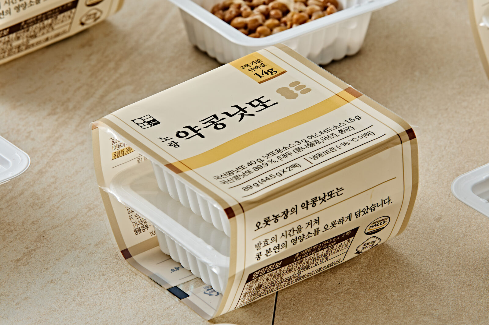
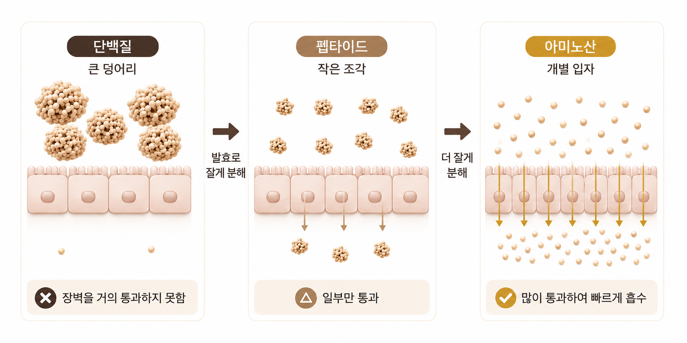
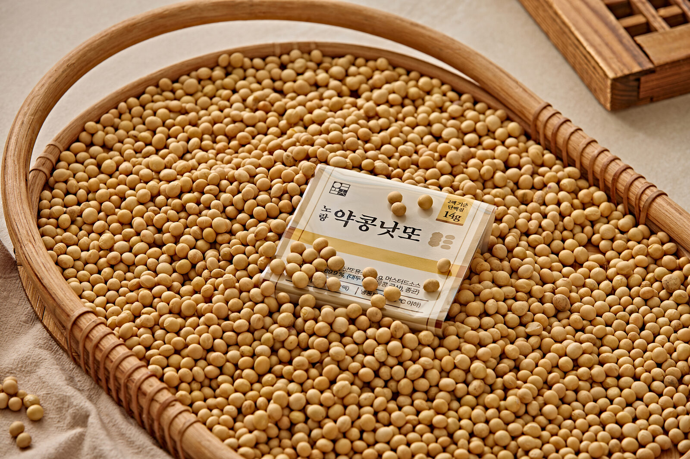
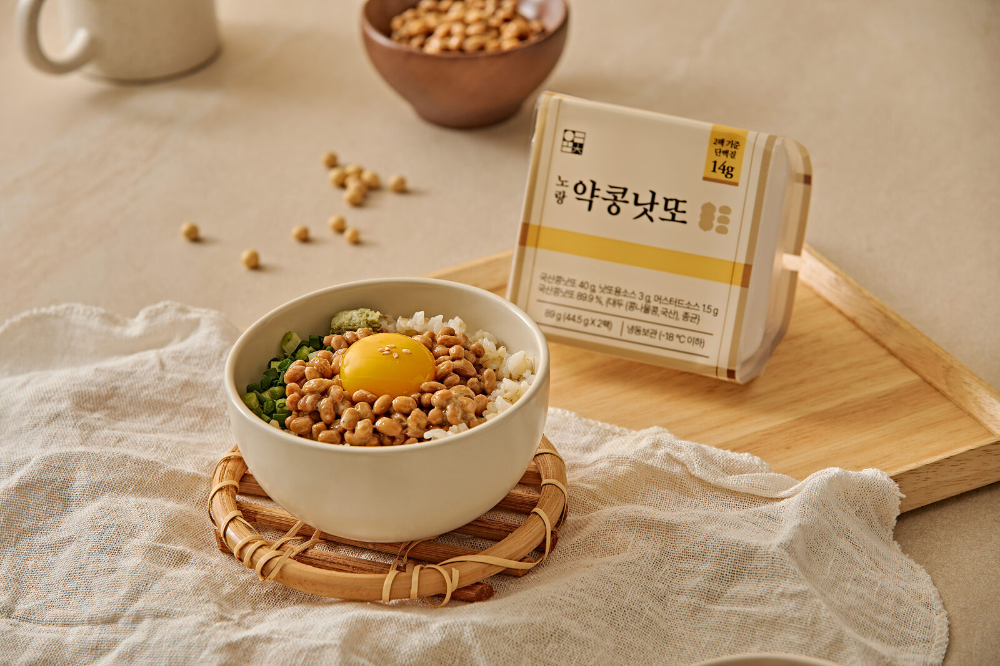

01 · Product
오롯이 노랑약콩으로,
하루 한 끼.
44.5g씩 두 용기, 한 번 먹기 딱 좋은 양으로 나눴습니다.
낫또소스와 머스타드까지 넣어 뜯는 즉시 완성됩니다.

1용기 = 낫또 40g + 소스 4.5g · 1묶음 총 89g
02 · Taste
사기 전에
가장 궁금한 것들.
낫또가 처음이어도 괜찮습니다. 실제로 많이 여쭤보시는 것들을 먼저 정리했습니다.
냄새가 강한가요?
청국장보다 향이 약합니다. 동봉된 낫또소스와 머스타드를 넣으면 향이 거의 느껴지지 않습니다.
어떻게 먹으면 되나요?
실온에서 약 1시간 해동한 뒤, 소스를 넣고 충분히 저어 밥·김·계란 등과 함께 드세요.
보관은 어떻게 하나요?
냉동 보관하고, 드시기 전 실온에서 약 1시간 해동해주세요.
03 · Texture
저을수록 살아나는
낫또 특유의 점성.
소스를 넣고 충분히 저으면 실처럼 이어지는 낫또 특유의 점성을 확인할 수 있습니다.
제조 현장에서 그대로 촬영한 실제 점성입니다.
소스를 넣고 약 50번 충분히 저어주세요.
04 · Fermentation
이 낫또의 차이는
발효에 있습니다.
오롯농장이 청국장에서 직접 분리한 균주 Bacillus sp. KSW-3로 발효합니다. 어떤 균으로, 몇 도에서, 몇 시간 발효하느냐가 이 낫또의 맛과 점성을 만듭니다.
청국장에서 분리한 자체 개발 균주
Bacillus sp. KSW-3
특허번호 10-0917004호
청국장에서 분리한 자체 개발 균주를 기반으로 안정적이고 일관된 발효 품질을 구현합니다.

05 · Ingredient & Process
좋은 발효는
좋은 콩에서 시작됩니다.
매일 먹는 식품일수록 원료가 분명해야 한다고 생각했습니다. 경북 안동에서 나는 국내산 노랑약콩을 선별해 씁니다.

Facility
안동 자체 공장·연구소에서
직접 만듭니다.
경북 안동의 자체 제조 공장과 기업부설연구소(2018 인증)를 기반으로, 발효 생산 설비와 HACCP 위생 라인을 갖추고 있습니다. 원료 수급부터 완제품까지 전 과정을 내재화해 품질을 관리합니다.
발효 품질 관리 프로세스
FERMENTATION QUALITY PROCESS
01
균주 선정
제품 용도에 맞는
균주 선별
02
발효 공정
온도·시간·배양
조건 관리
03
성분 분석
주요 품질 지표
단계별 확인
04
직접 생산
확정된 조건을
생산라인에 적용
05
품질관리
생산부터 출고까지
일관 관리
균주 선정부터 생산·출고까지, 일관된 기준으로 발효 품질을 관리합니다.
06 · How to eat
열고, 넣고,
충분히 저어주세요.
1
소스는 기호에 맞게 넣으시고
약 50번 정도 저어주세요.
2
실처럼 이어지는 낫또 특유의 점성이
충분히 살아날 때까지 저어주세요.
3
김, 계란, 참기름 등을 곁들이면
더욱 맛있게 즐길 수 있습니다.
“별도의 조리 없이, 한 끼로 간편하게.”
보관방법
냉동 보관하시고 유통기한 내에 드세요. (-18℃ 이하)
드시기 전 실온에서 약 1시간 자연 해동해서 드세요.
개봉 후 반드시 냉장 보관하시고, 가급적 빨리 드시기 바랍니다. (해동 후 재냉동 금지)
07 · Certifications
제조 과정과 연구 기반을
확인할 수 있는 자료입니다.
수상경상북도지사 표창 · 우수중소기업 선정
HACCP 인증서
제2025-4-0245호 · 현재 유효
기업부설연구소 인정서
제2025113803호 · 현재 유효
HACCP 최초 인증 이력
제2018-4-9056호
08 · Options & Info
내일 아침을 위한
노랑약콩낫또 한 끼.
노랑약콩낫또 24개입
처음 구매하거나 혼자 드시는 분
44.5g × 24 · 총 1,068g
노랑약콩낫또 36개입
꾸준히 챙겨 드시는 분
44.5g × 36 · 총 1,602g
검정 + 노랑 혼합 구성
노랑약콩과 검정약콩을 함께 즐기고 싶은 분
검정 12개 + 노랑 12개 · 총 24개입
검정 18개 + 노랑 18개 · 총 36개입
‘몇 개입’인지 헷갈리지 않게
1용기
낫또 40g + 소스 4.5g
= 총 44.5g
1묶음
2용기 구성
= 총 89g
24개입
2용기 × 12묶음
= 총 1,068g
24개입 옵션은 44.5g짜리 낱개 용기 24개, 즉 2용기 구성 12묶음 기준입니다. 36개입은 2용기 × 18묶음, 총 1,602g입니다.

* 낫또 콩 사이에 보이는 하얗고 두꺼운 피막은 발효 과정에서 생기는 단백질 가수분해물(점질물)입니다. 제품 이상이 아니니 안심하고 드셔도 됩니다. 잘 저을수록 이 점질물이 고르게 퍼져 더 부드럽게 드실 수 있습니다.